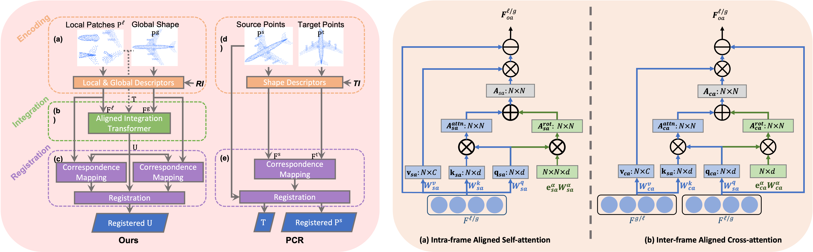

Rethinking Rotation Invariance with Point Cloud Registration
- School of Computer Science, University of Sydney, Australia


Overview
Recent investigations on rotation invariance for 3D point clouds have been devoted to devising rotation-invariant feature descriptors or learning canonical spaces where objects are semantically aligned. Examinations of learning frameworks for invariance have seldom been looked into. In this work, we review rotation invariance in terms of point cloud registration and propose an effective framework for rotation invariance learning via three sequential stages, namely rotation-invariant shape encoding, aligned feature integration, and deep feature registration. We first encode shape descriptors constructed with respect to reference frames defined over different scales, e.g., local patches and global topology, to generate rotation-invariant latent shape codes. Within the integration stage, we propose Aligned Integration Transformer to produce a discriminative feature representation by integrating point-wise self- and cross-relations established within the shape codes. Meanwhile, we adopt rigid transformations between reference frames to align the shape codes for feature consistency across different scales. Finally, the deep integrated feature is registered to both rotation-invariant shape codes to maximize their feature similarities, such that rotation invariance of the integrated feature is preserved and shared semantic information is implicitly extracted from shape codes. Experimental results on 3D shape classification, part segmentation, and retrieval tasks prove the feasibility of our framework.
Video
Highlights
- A PCR-cored learning framework for rotation invariance with three simple stages: rotation-invariant shape encoding, aligned feature integration, and deep feature registration.
- State-of-the-art accuracy on ModelNet40 classification under rotation: 91.0% (z/z), 91.0% (z/SO(3)).
- State-of-the-art accuracy on ScanObjectNN OBJ_BG classification rotation: 86.6% (z/z), 86.3% (z/SO(3)).
- State-of-the-art micro and macro mAP on ShapeNetCore55 under rotation: 0.715, 0.510.
- ShapeNetPart segmentation under rotation: 80.3% (z/z), 80.4% (z/SO(3)).
BibTeX
If you find our project useful in your research, please cite:
@InProceedings{yu2020ice,
title = {Rethinking Rotation Invariance with Point Cloud Registration},
author = {Yu, Jianhui and Zhang, Chaoyi and Song, Yang and Cai, Weidong},
booktitle = {International Joint Conference on Neural Networks (IJCNN)},
year = {2021}
}